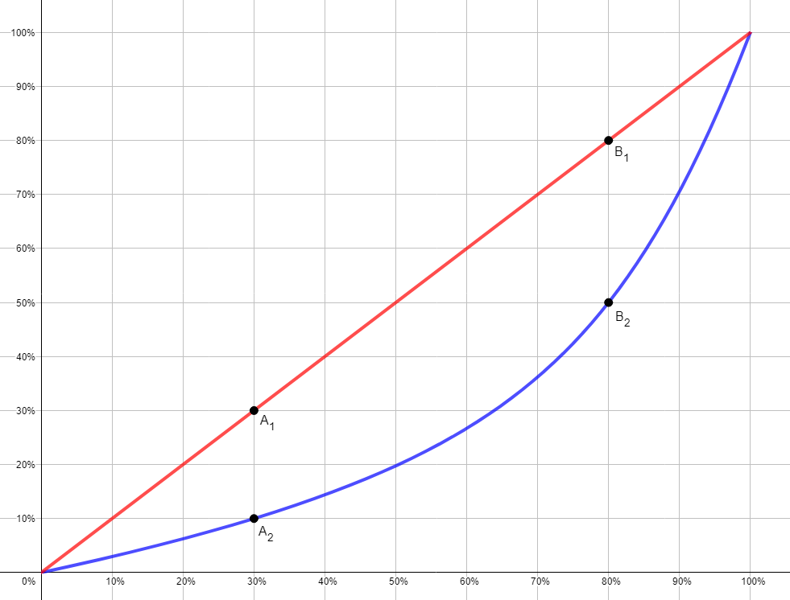

Matemática Financiera
4. Esos préstamos

Ya sabes lo que quieres comprar y su precio.
Has calculado lo que vas a tardar en poderlo comprar.
Y has simulado la concesión de un préstamo para adquirirlo antes.
Pero todo esto no es suficiente para afrontar con garantías el reto que te planteamos. Por ello, ahora vas a aprender las herramientas matemáticas necesarias para definir las condiciones de un préstamo que se ajuste lo mejor posible a tus necesidades.
Verás como te facilitan tus cálculos.
Lectura facilitada
Ya sabes lo que quieres comprar y su precio.
Has calculado lo que vas a tardar en poderlo comprar.
Y has simulado la concesión de un préstamo para adquirirlo antes.
Para afrontar con garantías el reto que te planteamos.
Ahora vas a aprender las herramientas matemáticas necesarias
para definir las condiciones de un préstamo
que se ajuste lo mejor posible a tus necesidades.
Verás como te facilitan tus cálculos.
PARA SABER MÁS
Kardia dice Otro uso de los porcentaje en la economía: La curva de Lorenz
La curva de Lorenz es una representación gráfica que se usa para estudiar la desigualdad en el reparto de la renta en un territorio, normalmente un país.
En la gráfica se sitúa en el eje de abscisas (eje X) el porcentaje acumulado de población y en el eje de ordenadas (ejeY) el porcentaje acumulado de renta.
La curva de Lorenz siempre empieza en el punto (0,0), puesto que el 0% de la población posee el 0% de la renta, y acaba en el punto (100,100), puesto que el 100% de la población posee el 100% de la riqueza.
En un territorio en el que la renta estuviera repartida de forma totalmente equitativa la curva de Lorenz sería el segmento que une esos dos puntos, puesto que cualquier porcentaje de la población poseería ese mismo porcentaje de la renta.
En la realidad eso nunca ocurre y la curva de Lorenz siempre es una curva que queda por debajo de ese segmento.
Un ejemplo:

La gráfica roja se corresponde con la curva de Lorenz en una sociedad con la renta repartida de forma totalmente equitativa. Observa como el punto $A_1$ indica que el 30% de la población posee el 30% de la renta, y el punto $B_1$ indica que el 80% de la población dispone del 80% de la riqueza.
La gráfica azul se corresponde con una sociedad en la que la renta no está repartida equitativamente. Observa como el punto $A_2$ indica que el 30% de la población solo dispone del 10% de la renta, y el punto $B_2$ indica que el 80% de la población dispone del solo del 50% de la renta, y por tanto, el otro 20% de la población dispone del otro 50% de la renta.
La curva de Lorenz permite observar de forma gráfica y sencilla cómo de desigual es el reparto de la renta en una sociedad, cuando más se diferencia de la recta ideal, la roja en el ejemplo, más desigual es.
Lectura facilitada
La curva de Lorenz es una representación gráfica
que se usa para estudiar la desigualdad
en el reparto de la renta en un territorio,
normalmente un país.
En la gráfica se sitúa en el eje de abscisas (eje X)
el porcentaje acumulado de población
y se sitúa en el eje de ordenadas (ejeY)
el porcentaje acumulado de renta.
La curva de Lorenz siempre empieza en el punto (0,0),
puesto que el 0% de la población posee el 0% de la renta,
y acaba en el punto (100,100),
puesto que el 100% de la población posee el 100% de la riqueza.
En un territorio en el que la renta estuviera repartida
de forma totalmente equitativa
la curva de Lorenz sería el segmento que une esos dos puntos,
puesto que cualquier porcentaje de la población
poseería ese mismo porcentaje de la renta.
En la realidad eso nunca ocurre
y la curva de Lorenz siempre es una curva
que queda por debajo de ese segmento.
Un ejemplo:
La gráfica roja se corresponde con la curva de Lorenz
en una sociedad con la renta repartida de forma totalmente equitativa.
El punto A1 indica que el 30% de la población
posee el 30% de la renta,
y el punto B1 indica que el 80% de la población
dispone del 80% de la riqueza.
La gráfica azul se corresponde con una sociedad
en la que la renta no está repartida equitativamente.
El punto A2 indica que el 30% de la población
solo dispone del 10% de la renta,
y el punto B2 indica que el 80% de la población
dispone del solo del 50% de la renta,
y por tanto, el otro 20% de la población
dispone del otro 50% de la renta.
La curva de Lorenz permite observar
cómo de desigual es el reparto
de la renta en una sociedad,
cuando más se diferencia de la recta ideal,
la roja en el ejemplo.
¿QUÉ ES LA CURVA DE LORENZ?
Obra publicada con Licencia Creative Commons Reconocimiento No comercial Compartir igual 4.0